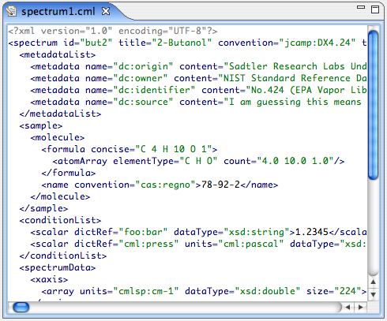

The XML Editor

The XML Editor is a basic XML Editor with syntax highlighting for editing XML-files.
It is used for files with extensions as listed below, and for these files it can
always be opened by right-clicking a resource in the BioResource Navigator and selecting "Open With... -> XMLEditor".
The XML Editor is, as all Editors in Bioclipse, hooked up to global actions
such as Copy, Paste, Undo, Redo, Select all, Find etc.
File extensions
The XMLEditor is available for the following file extensions:
Menu additions
There are no menu additions for the XMLEditor.
Content assistance (completion)
There is no content assistance in the XMLEditor.
Syntax highlighting
The XMLEditor contains basic XML syntax highlighting where tags are colored in blue,
and strings within tags are colored in green. Standard text between tags is displayed in black.